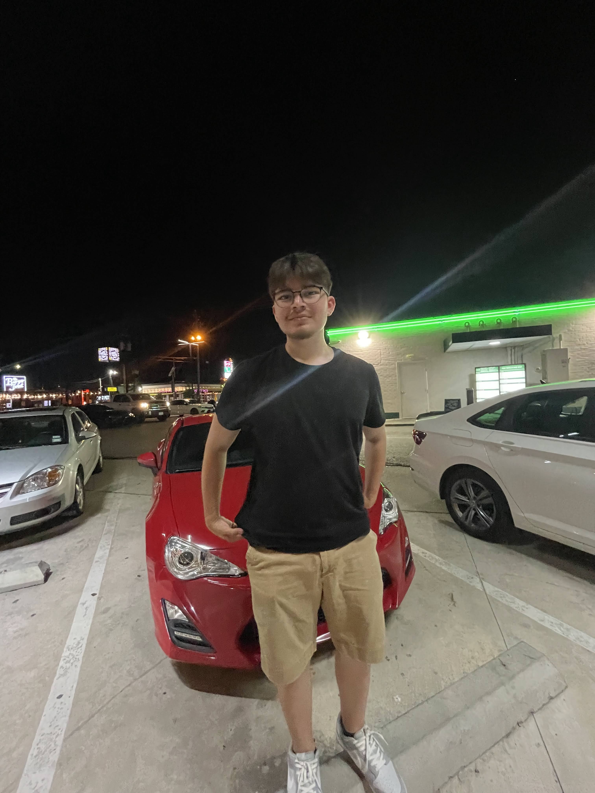

About Me
My name is Zaid Lizama. I'm a Houston native currently pursuing a major in Computer Information Systems. My constant companion is Winston, a unique blend of Australian Shepherd and Corgi, adding warmth to my everyday life.
When it comes to dining, I appreciate the diversity of sushi, with Nana's Bistro and Golden Bowl being my go-to spots. On other occasions, I enjoy the simplicity of a good burger, and Hopdoddy fits the bill perfectly.
Away from screens, I find fulfillment in hands-on projects. My 2016 Scion FR-S serves as a canvas for my tinkering, featuring bolt-on mods like headers and exhaust, an E85 tune, and coilovers. Beyond the modifications, I'm on a journey to understand the limits of my car and my own driving capabilities.